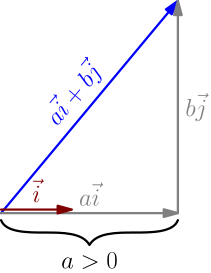
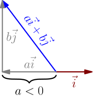
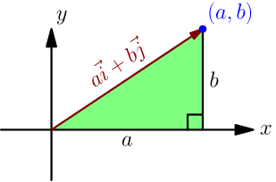
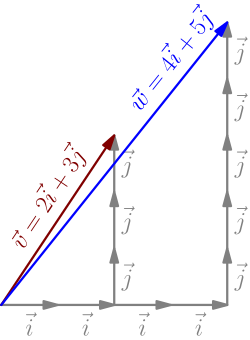

i's with i's, j's with j's¶
Let's figure out how to calculate any dot product like $(a\I+b\J) \cdot (x\I+y\J)$. Notice that the projection of any vector $a\I+b\J$ onto $\I$ is $a$.

This also works if $a$ is negative, because then the projection is also negative.

The dot product $(a\I+b\J) \cdot \I$ is the projection $a$ multiplied by the length of $\I$, which is $1$, and multiplying by $1$ does nothing. This leads to $$ (a\I+b\J) \cdot \I = a. $$ With projections, we derived the formula $$ \vec v \cdot (\vec w \, r) = (\vec v \cdot \vec w) r, $$ which works with any vectors $\vec v, \vec w$ and any number $r$. Applying that here gives $$ (a\I+b\J) \cdot (x\I) = (a\I+b\J) \cdot (\I \, x) = \underbrace{\Bigl( (a\I+b\J) \cdot \I \Bigr)}_a x = ax. $$ By doing a very similar calculation with $\J$ instead of $\I$, we see that $$ (a\I+b\J) \cdot (y\J) = by. $$ Let's calculate $(a\I+b\J) \cdot (x\I+y\J)$, where on the right side, we don't have just $x\I$ or $y\J$, but their sum. With projections, we got $$ (\vec a + \vec b) \cdot \vec c = \vec a \cdot \vec c + \vec b \cdot \vec c \qquad \text{for all vectors $\vec a, \vec b, \vec c$}, $$ and with angle between vectors, we got $$ \vec v \cdot \vec w = \vec w \cdot \vec v \qquad \text{for all vectors $\vec v, \vec w$}. $$ The first result says that if we have a dot product with vectors added on the left side, then it can be expanded, just like the product of numbers. The second formula says that order doesn't matter with dot product. By combining these, we see that if we have a dot product with vectors added on the right side, then that can also be expanded, just like the product of numbers, $$ \vec c \cdot (\vec a + \vec b) = \vec c \cdot \vec a + \vec c \cdot \vec b \qquad \text{for all vectors $\vec a, \vec b, \vec c$.} $$ Applying this gives $$ (a\I + b\J) \cdot (x\I+y\J) = \underbrace{(a\I + b\J) \cdot (x\I)}_{ax} + \underbrace{(a\I + b\J) \cdot (y\J)}_{by}. $$
For all vectors $a\I+b\J$ and $x\I+y\J$, we have $$ (a\I+b\J) \cdot (x\I+y\J) = ax+by. $$
I like to call this "$\I$'s with $\I$'s, $\J$'s with $\J$'s", or "iwi jwj" for short.
This is yet another way to think about the dot product. I'm sorry about the above wall of math with lots of formulas and only a couple pictures, but that's mostly the nature of this result; it's something that we can calculate easily, not something that we can visualize easily. The true power is in using this result together with all the visual things that we know about dot product, which is what we'll do next.
Example: Pythagorean Theorem Proof¶
Let's prove the Pythagorean theorem. We haven't needed it for any of the dot product stuff yet, so we can use everything we know about dot products in our proof. However, we used the Pythagorean theorem to derive the formula for length of a vector (TODO), so we can't use the vector length formula.
Consider any triangle with a 90 degree corner. Let's first rotate and move the triangle so that it's on the $x$ axis like this:

We have also seen that for any vector $\vec v$, we have $\vec v \cdot \vec v = \abs{\vec v}^2$. As a reminder, here are two ways to see it without the Pythagorean theorem:
- With angle between vectors: The angle between $\vec v$ and $\vec v$ (that is, the angle between the vector and itself) is zero, so $\vec v \cdot \vec v = \abs{\vec v} \abs{\vec v} \cos(0)$, where $\cos(0) = 1$.
- With projection: The projection of $\vec v$ onto itself is $\abs{\vec v}$. The dot product is that multiplied by the length of the vector being projected onto, which is also $\abs{\vec v}$.
Combining this with the "$\I$'s with $\I$'s, $\J$'s with $\J$'s" rule, we get $$ \abs{a\I + b\J}^2 = (a\I + b\J) \cdot (a\I + b\J) = a^2 + b^2, $$ and letting $c = \abs{a\I+b\J}$ denote the length of the longest side of the triangle gives the Pythagorean theorem.
Also, square rooting both sides above (and noticing that vector length isn't negative) gives $$ \abs{a\I + b\J} = \sqrt{a^2 + b^2}, $$ which is the vector length formula. We used a picture with positive $a$ and $b$, but this works similarly in other cases (TODO).
Example: Calculating Projection¶
Let's calculate some things with $\vec v = 2\I+3\J$ and $\vec w = 4\I+5\J$. Their dot product is $$ 2 \cdot 4 + 3 \cdot 5 = 8 + 15 = 23, $$ and by the vector length formula (derived above), their lengths are $$ \abs{\vec v} = \sqrt{2^2+3^2} = \sqrt{13} \quad \text{and} \quad \abs{\vec w} = \sqrt{4^2+5^2} = \sqrt{41}. $$
Let $p$ be the projection of $\vec v$ onto $\vec w$. Then, with projection stuff, we get $$ \vec v \cdot \vec w = p\abs{\vec w}, $$ so $$ p = \frac{\vec v \cdot \vec w}{\abs{\vec w}} = \frac{23}{\sqrt{41}}. $$
Example: Calculating Angle Between Vectors¶
Let $\vec v$ and $\vec w$ be as above, and let $\theta$ be the angle between them. Then, with angle stuff, we get $$ \vec v \cdot \vec w = \abs{\vec v} \abs{\vec w} \cos(\theta), $$ which leads to $$ \cos(\theta) = \frac{\vec v \cdot \vec w}{\abs{\vec v} \abs{\vec w}} = \frac{23}{\sqrt{13}\sqrt{41}}. $$ To find $\theta$ from here, use a button named $\arccos$, $\text{acos}$ or $\cos^{-1}$ on your calculator: $$ \theta = \arccos\left( \frac{23}{\sqrt{13}\sqrt{41}} \right) \approx 4.9697^\circ $$ That's a small angle; we all know how much 45 degrees is, and this is about 10 times smaller than that.
